Signal Processing
Filtering
Signal Mixing: multiple signals and noise combine at the sensors and in the data
Signal Separation: Isolating (unmixing) distinct sources
In spectral mixing, the mixing of signals and noise with different frequencies occur, and spectral separation can be used to unmix them.
Procedure for Filtering Data
- Define frequency-domain shape and cut-offs
- Generate filter kernel (firls, fir1, Butterworth, or other)
- Evaluate kernel and its power spectrum
- Apply filter kernel to data
| FIR | IIR | |
|---|---|---|
| Name | Finite Impulse Response | Infinite Impulse Response |
| Kernel Length | Long | Short |
| Speed | Slower | Fast |
| Stability | High | Data-Dependent |
| Mechanism | Multiply Data with Kernel | Multiply Data with Data |
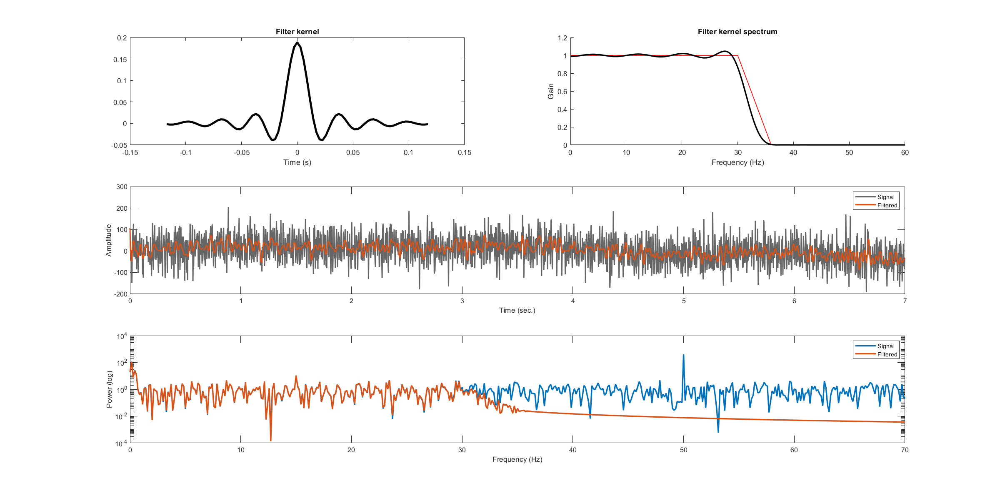
FIR Filters with firls
For a bandpass filter, you would specify 6 numbers. The first number always corresponds to $0$, the DC; the sixth number always corresponds to $1$, the Nyquist frequency, and the other four points that you specify correspond to the frequencies that you want to pass through the filter. The reason for specifying two points on either side is so that you don't have very sharp edges on either side. Sharp edges can lead to ripple artifacts in the time domain.
The other input that you need to specify into the firsl function is the gain (ones where you want to allow the signal to pass through and zeros where you want to attenuate and block spectral features of the signal). Transition zones are generally specified in terms of percent of frequency (e.g., $5\%$ or $10\%$ of the total range of passthrough frequencies).
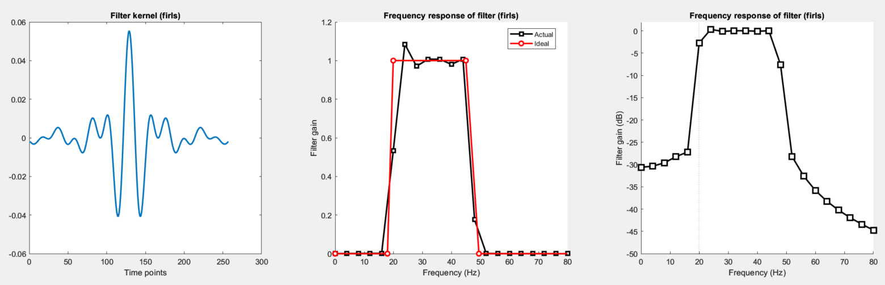
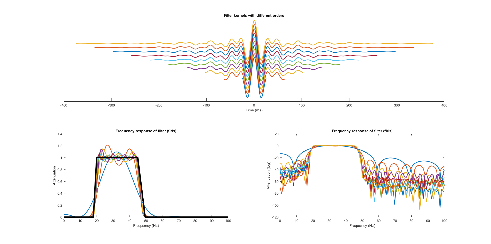
FIR Filters with FIR1
The fir1 filter is the same as firls, but without transition zones. It was mentioned previously that having a transition zone of $0$ is not a good idea because the sharp edges will introduce ripple artifacts into the time domain. What fir1 will do is apply a window to the time domain filter kernel in order to smooth out the edges, in effect creating a transition zone. Using fir1 is more appropriate when you really want maximal attenuation, at the risk of attenuating some of the signal.
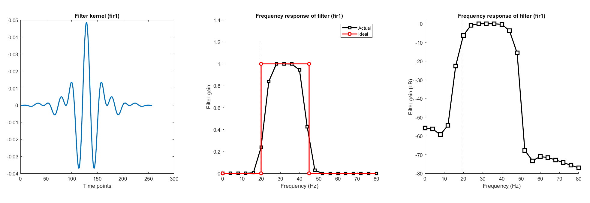
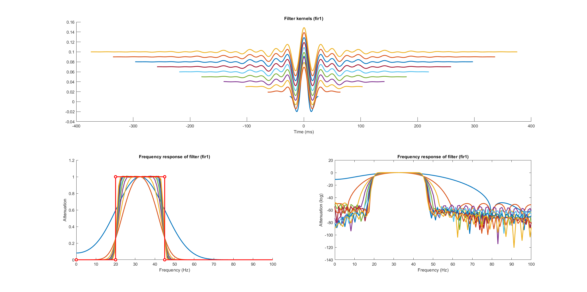
IIR Butterworth Filters
IIR filters are set up in similar fashion to the fir1 filter. You don't need to specify each corner of the frequency response, but rather, just the lower bound and upper bound of the passband (no transition zones). The key difference between IIR filters and FIR filters is how you evaluate the filter.
There are two sets of coefficients for IIR filters. They key difference between an FIR and IIR filter is that with IIR filters, each new data point in the filtered signal is equal to not only a weighted sum of values in the original signal, but also weighted values of the filtered signal.
To evaluate an IIR filter, you use the filter and see how it looks ln practice, and the best way to do that is with an impulse response. An impulse is a time series of all zeros and one value of 1 that is in the middle.
In general, IIR filters are not going to be better than FIR filters, and will at best be as good. That comes down to two things:
- The FIR filter kernel is much longer, which means better spectral resolution
- IIR filters are incorporating previous values of the filtered signal
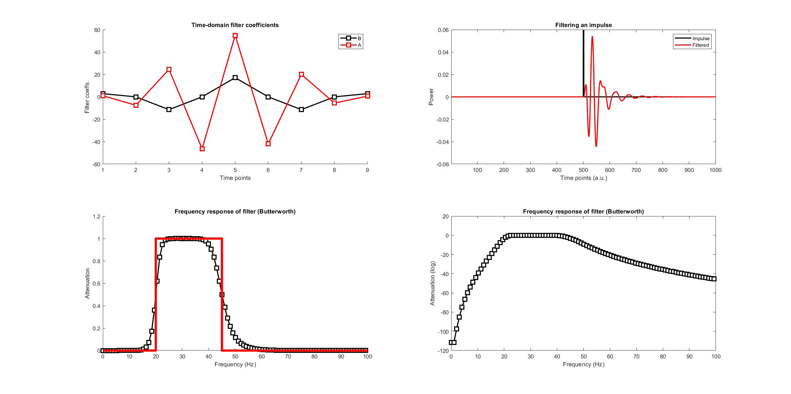
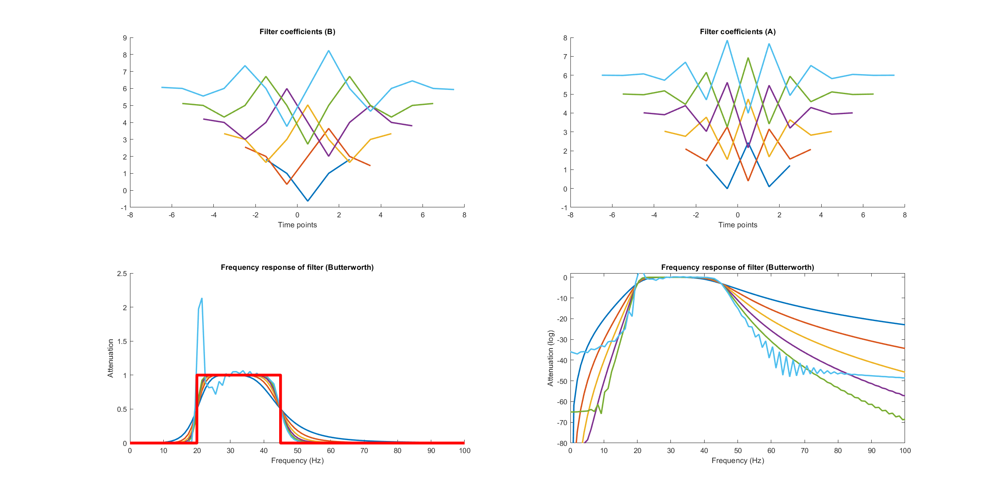
Causal and Zero Phase-Shift Filters
Causal filters are also sometime called forward filters. They way that filtering works is you set each time point in the filtered signal to be weighted combinations of the original signal. You take a number of points from the past history (the number depending on filter order), and multiply by the filter kernel. Then sum all those points together, and that is the value of the filtered signal at the end point of the filter (e.g. wavelet). This means what happened in the past is largely driving what happens at the 'current' time point. This creates a phase shift.
For any kind of signal processing that is done after you've already collected the data, it is possible to create a zero phase-shift filter. The way that zero phase-shift filtering works is by filtering the signal forwards in time - so you start with the current time point of the filter signal being a function of previous values, and then you flip time backwards and filter again, going backwards in time.
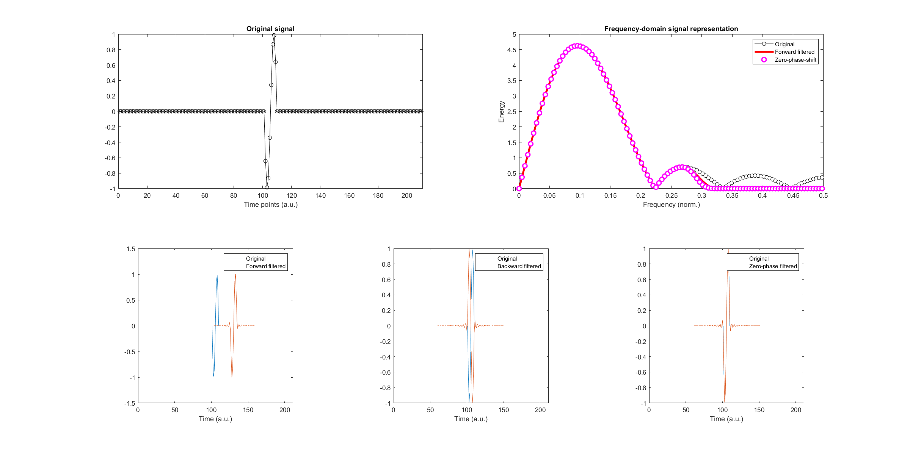
Avoid Edge Effects with Reflection
There are often edge effects at the boundary of a time series anytime you apply a filter. Reflection is a way of avoiding edge effects contaminating the signal, by basically adding additional versions of the signal at the beginning and end of the signal. The edge effects will contaminate the new edges and then the new edges are cut off.
The reason you get edge effects with FIR and IIR filters is that each time point in the filtered signal is defined to be a weighted combination of previous values of the original signal. With IIR filters, it is also a product of weighted values of the previous version of the filtered signal. A filtered signal can really only begin at one kernel length into the signal, and the way to avoid issues is a procedure called reflection.
The idea of reflection is to take exactly the same signal, but mirror it, and attach the mirrored version to both the start and end of the signal (which will make for smooth transitions). Once done filtering, these additions are cut off. What you are left with is a filtered version of the signal with no edge effects. The length of the period reflected does not necessarily have to be as long as the signal, but must be as long as the filter kernel.
This is recommended whenever there is not a long enough extraneous time-period at the start and end of the time-domain signal.
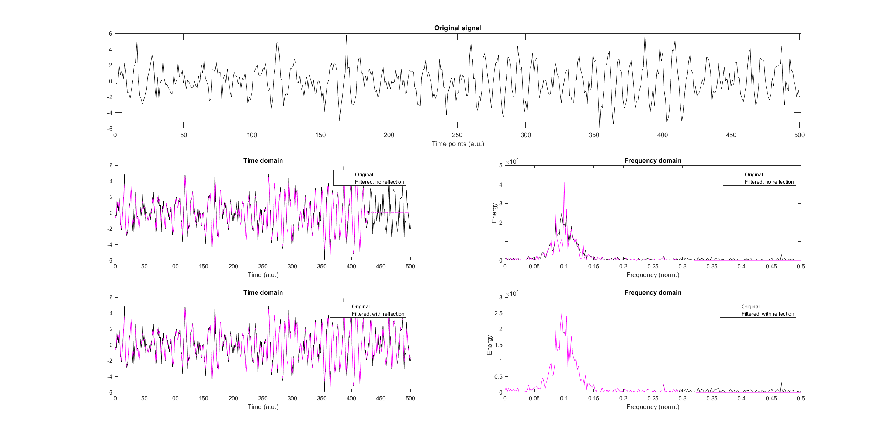
Windowed-Sinc Filters
The windowed-sinc filter is a low-pass filter generated by a sinc function, $y = sin(t)/t$, often with $2 \pi f$ added to the numerator, so you can define the frequency of the sine wave (using units of $Hz$ for $f$ if $t$ is in seconds).
$$y = \frac{sin(2 \pi f t)}{t}$$
In practice, you interpolate the point where $t=0$, because that puts $0$ in the denominator of the sinc function. In the frequency spectrum, there will be a sharp attenuation in amplitude at the point corresponding to $f$.
People often use a windowed-sinc function because of edge effects at the beginning and end of the kernel. One might use a Hann window, Hamming window, or Gaussian window to provide the tapering.
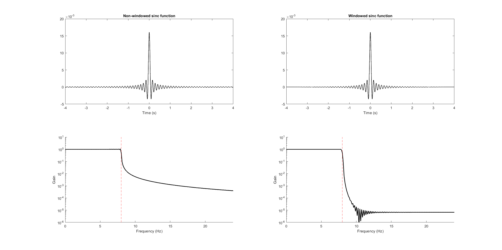
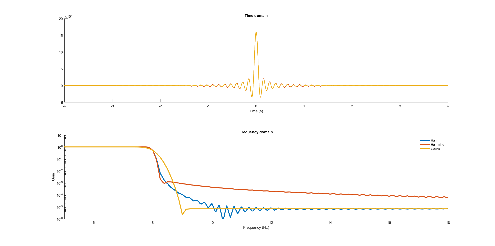
Quantifying Roll-Off Characteristics
One of the ways to describe the characteristics of a temporal filter is by quantifying the so-called roll-off of the filter: the decreasing amplitude with increasing frequency at the end of the desired passband (though whether a sharp roll-off is desirable depends on the application). Filters that have a more gradual roll-off tend to have fewer nonlinearities, at the expense of a more gentle decay function.
To quantify, you start with the specified cutoff frequency (that you specify when creating the filter). Then convert the power spectrum to decibel, and then find the frequency that has $-3 ~dB$ of attenuation (or closest to it). Then, double that frequency, and compare attenuation at the doubled point to that of the frequency at which $-3 ~dB$ was found.
$$\text{Roll-Off } = \frac{ g_{2f} - g_{-3} }{ Hz_{2f} - Hz_f }$$
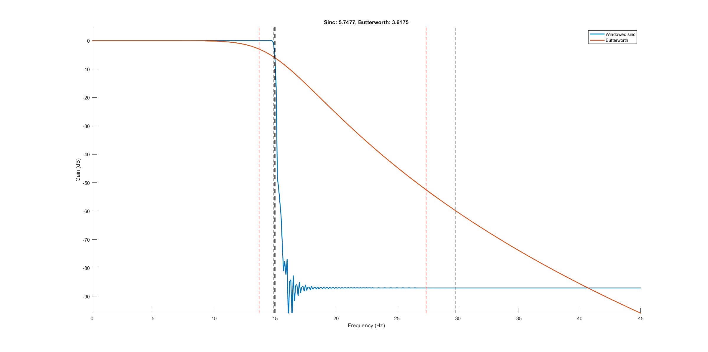
Convolution
Convolution is a way to combine two time series (or images) to create a new one. The signal is combined with a kernel (filter), and the result is a mixture of their features.
You take the signal data and the kernel and line them up such that the rightmost part of the kernel is aligned with the leftmost part of the signal, and compute the dot product between the parts of the kernel and signal that are aligned. You must add some extra zeros to the beginning of the signal, corresponding to the length of the kernel minus $1$. That resulting dot product gets into the result of convolution at a location corresponding to the center of the kernel (so it is useful to have an odd number of points in the kernel). Then move the kernel over to the right by one step and repeat the process. The last step of convolution is when the leftmost point of the kernel is aligned with the rightmost part of the signal. The kernel must be flipped before the convolution takes place.
Subtracting the mean from the kernel (such that some of its values are negative) gives a signed edge detector which provides smoothing.
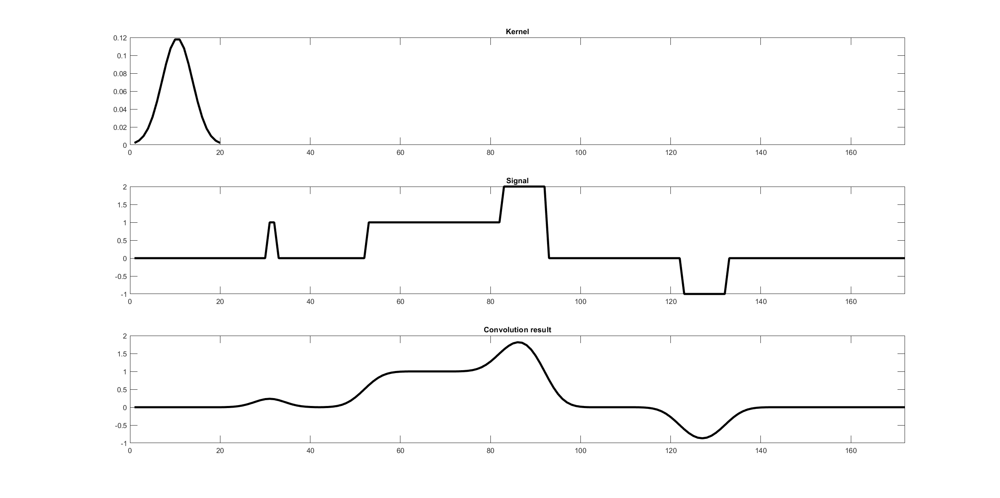
Why is the Kernel Flipped?
With convolution, you flip the kernel backwards; otherwise, the operation being performed is cross-correlation. One intuition for why the kernel must be flipped is that from inside the signal, you are looking backwards in time. It is also the case that the convolution theorem equates convolution in the time domain with multiplication in the frequency domain, and this property does not hold unless the kernel is flipped in the time domain.
The Convolution Theorem
The convolution theorem prescribes a very efficient way to implement filtering through frequency domain operations. Time domain convolution is done by taking the kernel and sliding it along each time point, at each computing the dot product between the points of the kernel and signal which align. Convolution in the time domain is the same as multiplication in the frequency domain, so the Fourier transform of the result of convolution, if multiplied by the frequency spectrum of the original signal, produces the same output signal as the result of convolution. This is useful computationally because the FFT and multiplication operations are much faster than convolution in the time domain. It also requires less code, and removes the need for zero-padding.
Wavelets
Wavelets, of which there are many types, have the following properties:
- They must taper down to zero at the beginning and end
- They must integrate to zero
Different types have differing applications; for example, a Morlet wavelet, which is a sine wave multiplied by a Gaussian, are useful for time-frequency analysis because they are nicely localized in the frequency domain.
There are two broad categories of wavelet applications; one is filtering, and another is feature detection (a.k.a. pattern matching).
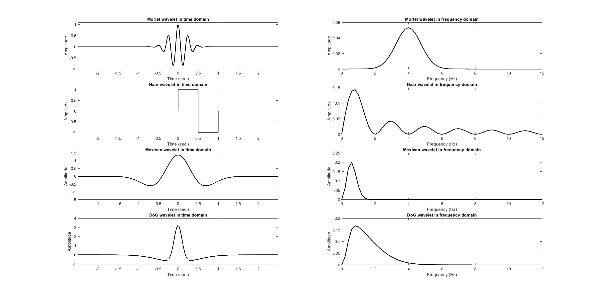
Time-Frequency Analysis with Complex Wavelets
A complex sine wave is a sine wave that contains a real part and an imaginary part. The real part corresponds to a cosine and the imaginary part to a sine. A convenient way to represent a complex sine wave is using Euler's formula and Euler's notation:
$$e^{ik} = cos(k) + i ~sin(k)$$
You replace $k$ with $2 \pi f t$, or optionally, $2 \pi f t + \theta$, though people typically leave $\theta$ out and implicitly set it to zero.
$$e^{i 2 \pi ft} = cos(2 \pi ft) + i ~sin(2 \pi ft)$$
Convolution with a complex Morlet wavelet is performed just as before, but because the kernel is a complex wave (i.e., a complex vector), the dot product becomes a complex dot product.
For each dot product, each point in the result of convolution, you want to extract the magnitude of that complex dot product, and plot it as time-frequency power. The magnitude of the dot product, which is the result of convolution between the wavelet and the time series signal, is the time-frequency power at the frequency corresponding to the frequency of the wavelet.
There are two other features of complex wavelet convolution that you can extract. One is the angle of the vector relative to the positive real axis, which can be plotted in a time-frequency phase plot; and then there is the projection onto the real axis, which can be plotted as the band-pass filtered signal.
Resampling, Interpolating, and Extracting
Upsampling is done when you have a relatively low-sampling data rate in a time series. The new data should be overlapping with the original data and you should have additional points interpolated between those data points. The spectrum of the upsampled data should resemble the original data.
Downsampling is the opposite; you start with relatively high-resolution data, and reduce the number of data points in an evenly distributed way. The 3-step procedure for downsampling data is:
- Pick new sampling rate
- Low-pass filter at the new Nyquist
- Downsample
Applying step 2 can be referred to as applying an anti-alias filter.
Strategies for Multirate Signals
A multirate signal refers to a dataset where you have different variables that are sampled at different rates (such as if coming from different acquisition devices or technologies). One strategy is to upsample such that each signal has the same number of data points as the fastest-sampled signal, another is to down-sample such that each signal matches the lowest sampling rate in the group. It is generally preferable to upsample rather than downsample.
Extrapolation
Extrapolation is more difficult than interpolation, and involves guessing what happens outside the boundaries of measured data. It becomes less trustworthy as you move farther away from the measured boundary.
Spectral Interpolation
What do you do if you have a large chunk of time for which you need to interpolate signal? A straight line connecting the parts of the signal that are present would typically be noticably inappropriate, as it would not be close to the frequency spectrum of the parts that are present. Instead, take Fourier transforms of the data before and after the break. It is useful to have both of these time windows be the same size. Average the two frequency spectra together, providing a third Fourier spectrum, and take the inverse Fourier transform of that spectrum, providing the missing time-domain signal. The end points of the window likely won't match nicely with the points before and after the missing data, and the remedy to this is to add a linear trend that smoothly connects the points.
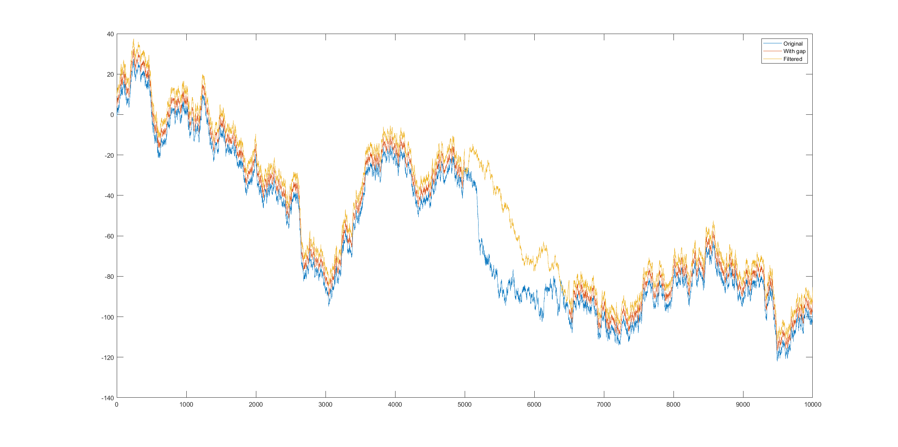
Dynamic Time Warping
The goal of dynamic time warping is to apply non-linear warping to match the dynamics of two time-series (regardless of whether they are proportionately mismatched among each dynamic). It works by creating a distance matrix for all possible pairs of time points, and then finding a trajectory through this time by time matrix that minimizes the distances (which is typically close to the diagonal, assuming the two time series' were relatively similar to begin with).